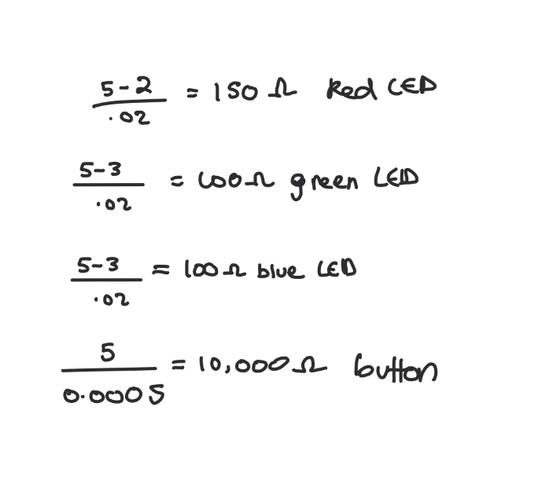

Here is all the documentation for assignment 2!
Here is all the documentation for assignment 2!
Schematic:

I chose to draws the schematics like this because I used 3 pins for each LED, 1 pin for a button, 4 resistors, and 4 pins that connect to GRND.
Circuit:

I arranged my LEDS like so it appears like the light fades back and forth.
Ohm's Law Calculations

I chose to use a 220 OHM resistor for each LED and a 10K resistor because after calculating Ohm's law for each LED and button, 220 and 10K were the safest and most reasonable option.
Firmware:
/*
Valentina Filizola
Fade! Assignment
HCDE 439
*/
// LED connected to pin 4 (controlled by button)
int blinkLed = 4;
// button connected to pin 2
int buttonPin = 2;
// Array holding the two PWM LEDs
int leds[] = {5, 6};
// represents the number of LEDS that will fade
int numLeds = 2;
// Button toggle
// Stores whether the LED on pin 4 should be ON or OFF
bool ledOn = false;
// Stores the last state from the button pin
bool lastButtonReading = HIGH;
// Time (in milliseconds) when the button last changed state
// I used ChatGPT here to include this variable for my code to work properly
// This variable remembers the time (in milliseconds) when something last happened.
unsigned long lastDebounceTime = 0;
// Minimum time the button state must remain stable before it is considered a valid press (debounce delay)
// I used ChatGPT here to include this variable for my code to work properly
const unsigned long debounceMs = 30;
// Index of the currently active fading LED, 0 is pin 5 and 1 is pin 6
int activeIndex = 0;
// Brightness level for the fading LED
int brightness = 0;
// Amount brightness that changes each step
int fadeAmount = 5;
// Stores the last time the fade was updated
// I used unsigned long because it acts a counter for very large numbers. Using an int variable before was not allowing my circuit to work.
unsigned long lastFadeStep = 0;
// Time interval (ms) between fade steps
//I used this as a replacement for my delay which was originally not allowing my circuit to work.
const unsigned long fadeStepMs = 10;
void setup() {
//Initializes LED pin 4 as output
pinMode(blinkLed, OUTPUT);
// Button reads HIGH when released, LOW when pressed
pinMode(buttonPin, INPUT_PULLUP);
//Initializes LED pins as outputs
// pin 5
pinMode(leds[0], OUTPUT);
// pin 6
pinMode(leds[1], OUTPUT);
}
void loop() {
// Reads the current state of the button
bool reading = digitalRead(buttonPin);
//Checks if this is a valid button press or just debouncing
if (reading != lastButtonReading) {
// saves the current time to measure how long ago the button last changed state
lastDebounceTime = millis();
}
// Checks if the reading has been stable long enough, used for debouncing
if ((millis() - lastDebounceTime) > debounceMs) {
// Store the last stable button state
static bool stableState = HIGH;
// Checks if the stable state changes
if (reading != stableState) {
// if the stable state changes, it will change the state of the button (high or low) to what it should be
stableState = reading;
// Detects a button press
if (stableState == LOW) {
// Toggle pin 4 LED state
ledOn = !ledOn;
}
}
}
// Saves reading for next loop iteration
lastButtonReading = reading;
// Turns pin 4 LED ON or OFF based on toggle state
digitalWrite(blinkLed, ledOn ? HIGH : LOW);
// Check if enough time has passed for the next fade step
if (millis() - lastFadeStep >= fadeStepMs) {
// If enough time passed the next fade update
lastFadeStep = millis();
// Apply brightness to the active LED
analogWrite(leds[activeIndex], brightness);
// Ensure the inactive LED is fully OFF
// Pin 5 represents index 0 and pin 6 represents pin 6.
// 1 - activeindex for ex: if it were leds[1] (pin 6 ON fading ) it would result in leds[0] (pin 5 OFF).
analogWrite(leds[1 - activeIndex], 0);
// Update brightness for next step
brightness += fadeAmount;
// If maximum brightness reached, reverse direction
//checks if brightness has reached maximum value
if (brightness >= 255) {
// brightness represents the maximum brightness value
brightness = 255;
// reverses brightness direction
fadeAmount = -fadeAmount;
}
//Checks if LED is off
if (brightness <= 0) {
// sets brightness to zero (OFF)
brightness = 0;
// reverses brightness direction
fadeAmount = -fadeAmount;
//Toggle between pin 5 and pin 6
activeIndex = 1 - activeIndex;
}
}
}
Circuit's Operation
Additional questions:
1: Draw a chart where the X axis is time and the Y axis is voltage. Draw 3 lines representing the voltage across an LED with analogWrite(led, 64), analogWrite(led, 128), and analogWrite(led, 255).

2: If all your LEDs were on simultaneously, what would the total current draw be? Is this above or below the total Arduino current draw limits? If all your LEDs were on, how long would your circuit run if powered by a 1200 mAh battery?
If all my LEDs were on simultaneously, the total current draw would be about 36 mA. I did this by adding each LED voltage. This would be well within the Arduino's draw limits since
the absolute max is 40mA per pin, and 200 mA across all pins. Moreover, if all my LED's were on my circuit would run for about 14 hours if it were powered by a 1200mA battery.
I did this by adding the total voltage across all my LED's plus the arduino's voltage (50mA). Finally, I divided this sum by 1200 to get to my answer.
3: Measure and record the actual voltage across one of your LEDs when it's on. How does this compare to the theoretical forward voltage for your LED color?
I recorded my red LED to be 2.1 mA. The theoretical forward voltage of red LED's is between 1.8-2.2 mA.
4: Did you use AI tools in completing this assignment? If yes, please provide details on how/when, as well as a brief reflection. If no, you can either leave this question blank, or provide other information if you'd like.
I used ChatGPT to figure out how to debug my code. I was having trouble with my button toggle for pin 4. After I added "unsigned long:" and its logic,
the debouncing stopped and my code ran normally. In the future I'd like to learn if there is a different way to run my code without using this
variable or if it was really necessary in order for it to work.